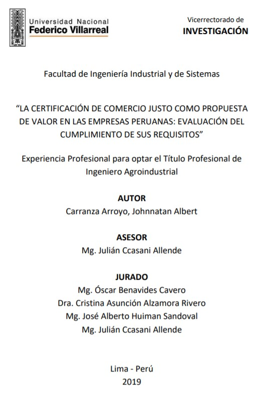
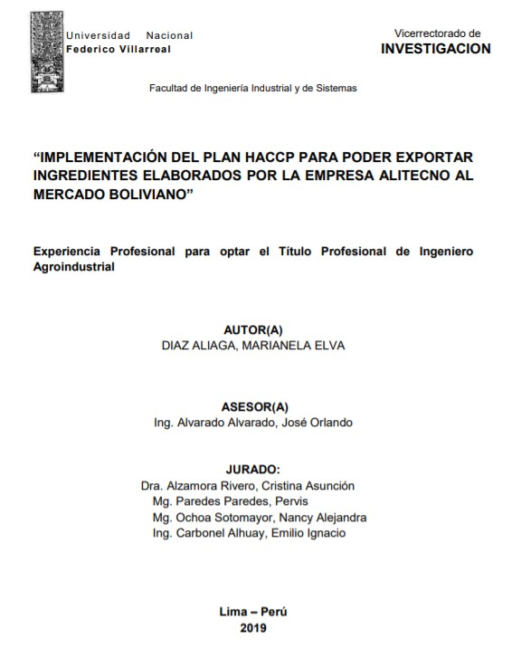
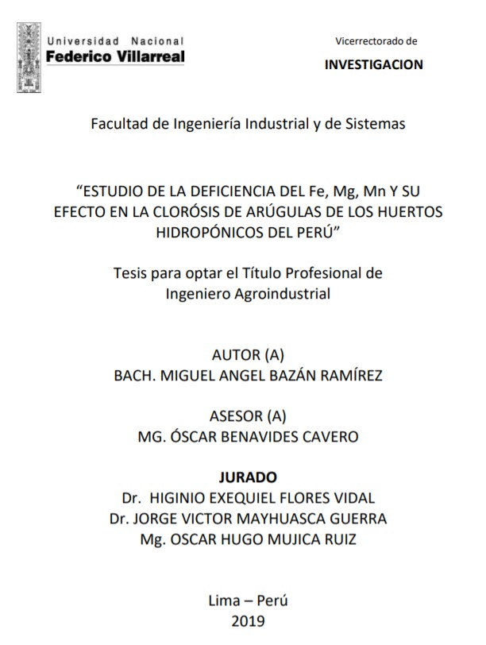
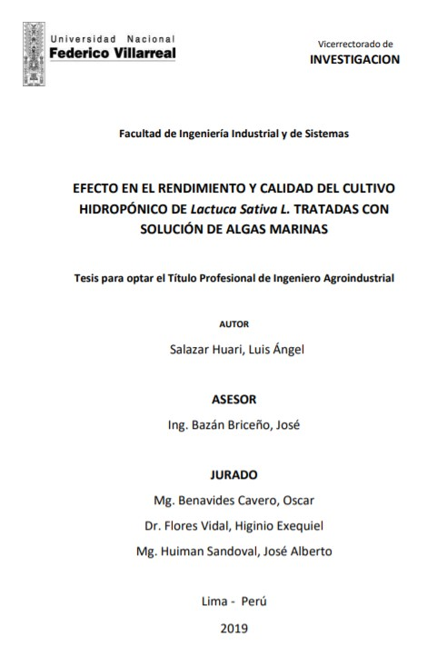
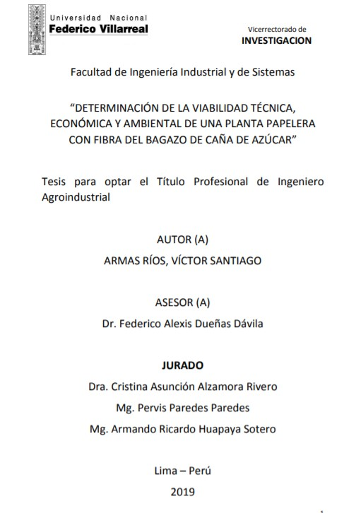
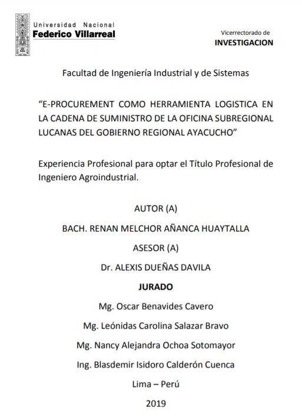
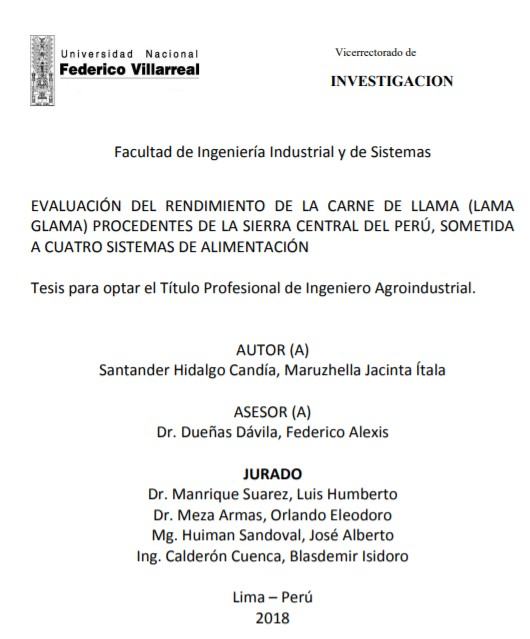

La certificación de comercio justo como propuesta de valor en las empresas
peruanas: evaluación del cumplimiento de sus requisitos
AUTOR: Carranza Arroyo, Johnnatan Albert
 Descripcion:
Descripcion:
Las micro, pequeñas y medianas empresas locales afrontan desafíos al momento de implementar las exigencias de sus clientes internacionales. Una de las exigencias más solicitadas es la obtención de una certificación sostenible. Para el sector vestimenta, una de las certificaciones de mayor reconocimiento es la certificación de comercio justo. En Perú, se ha desarrollado una normativa de alcance nacional denominada Buenas prácticas de comercio justo. Para implementar con éxito dicha normativa se requiere que las empresas conozcan, no solo el objetivo de cada requisito, sino también las formas en las que pueden evaluarse. Esto es importante pues únicamente se podrá conocer el nivel de la implementación alcanzado por medio de una adecuada evaluación. En este sentido, el presente trabajo muestra las formas en las que una empresa puede evaluar cada requisito que compone la certificación Buenas prácticas de comercio justo.

Implementación del plan HACCP para poder exportar ingredientes elaborados por
la empresa alitecno al mercado boliviano
AUTOR: Diaz Aliaga, Marianela Elva
Descripcion:
El presente trabajo es una descripción detallada sobre la implementación del Sistema HACCP en la fabricación de alimentos, a fin de asegurar la calidad sanitaria y la inocuidad de los productos elaborados por la empresa “ALITECNO” destinados a exportación, obteniendo de esta manera la Certificación de Validación Técnica Oficial del Plan de Análisis de Peligros y Puntos Críticos de Control (HACCP) otorgada por la Dirección General de Salud Ambiental (Digesa) del Ministerio de Salud. Los productos de exportación elaborados por la empresa Alitecno, son insumos que consisten en mezclas de ingredientes en polvo a base de proteína de soya de uso en la industria cárnica con fines organolépticos. Dicho plan de inocuidad fue desarrollado en base a los lineamientos establecidos por el sistema de Análisis de Peligros y Puntos Críticos de Control (HACCP por sus siglas en inglés).

Estudio de la deficiencia del FE, MG, MN y su efecto en la clorósis de
arúgulas de los huertos hidropónicos del Perú
AUTOR: Bazán Ramírez Miguel Angel
Descripcion:
La investigación se realizó en el Módulo hidropónico de la Facultad de Ciencias Agrarias de la Universidad Nacional Agraria, durante los meses de Febrero a Abril de 2019.El objetivo principal de mi trabajo de investigación consiste en determinar la influencia de Fe+Mg+Mn en el color de las hojas de arrúgalas hidropónicas. Teniendo como unos de los objetivos específicos para lograr esto: Controlar el contenido de Fe+Mg+Mn en las arrúgalas hidropónicas en el grupo Experimental; evaluar el comportamiento de las arrúgalas en el trasplante definitivo (NFT); hacer un análisis de la planta, luego de la cosecha para determinar qué parte y de qué Manera fue afectada la planta con sus deficiencias. La metodología que fue usada en este trabajo fue un diseño experimental de bloques completos al azar con cuatro tratamientos y seis repeticiones. Un grupo control y 3 con deficiencias de Hierro, Magnesio y Manganeso.

Efecto en el rendimiento y calidad del cultivo hidropónico de lactuca sativa
l. tratadas con solución de algas marinas
AUTOR: Salazar Huari, Luis Ángel
Descripcion:
En la presente tesis se evaluó el efecto en el rendimiento y calidad del cultivo hidropónico de Lactuca Sativa L. tratada con solución de algas marinas. Se aplicó el modelo ortogonal de Taguchi obteniendo cuatro formulaciones para su elaboración a base de extracto de alga marinas y agua; las formulaciones fueron aplicadas a 5 camas de Lactuca sativa.L una por cada cama, siendo los parámetro a evaluar rendimiento (peso/planta) y calidad del cultivo (mg/g de clorofilas) en la etapa de cosecha, la aplicación y cambio de solución nutritiva se realizó en intervalos de 7 días. Se obtuvo como resultados que la formulación hidropónica F2 (10% de extracto de algas marinas) presento un efecto mayor sobre el rendimiento y calidad de Lactuca sativa.l a comparación de las concentraciones de 12,5; 30 y 25 % de extracto de algas marinas; obteniendo un peso de 64,38 g/planta y 1,948 ug/g de clorofilas totales.

Determinación de la viabilidad técnica, económica y ambiental de una planta
papelera con fibra del bagazo de caña de azúcar
AUTOR: Armas Ríos, Víctor Santiago
Descripcion:
Es conocida la trayectoria productiva del Perú como un país especializado en la producción de azúcar proveniente de la caña (sacharum ofificianali), sin embargo este es un sector que tiene diversos problemas, entre ellos la necesidad de contar con nuevos productos, como bien podría ser la producción de papel, en una estrategia de diversificación productiva. En ese contexto, la presente tesis tiene como objetivo evaluar la viabilidad técnica, económica y ambiental del uso de la fibra del bagazo de caña de azúcar en una planta papelera a nivel de estudio de pre factibilidad para la producción y comercialización de papel a partir del bagazo. La metodología empleada consistió en el diseño y elaboración de una matriz de evaluación con la selección de indicadores que expresen de mejor manera los aspectos técnicos, económicos, financieros y ambientales; se procederá con la aplicación del modelo DELPHI.

E-Procurement como herramienta logística en la cadena de suministro de la
oficina subregional lucanas del gobierno regional Ayacucho
AUTOR: Añanca Huaytalla, Renan Melchor
Descripcion:
El presente trabajo, es fruto de la experiencia y consiste en la descripción y análisis de la aplicación de las TICs a la gestión de aprovisionamiento, adoptando constructos e identificando el e-Procurement, como una herramienta de apoyo logístico en la Cadena de Suministro de la Oficina Subregional Lucanas - Gobierno Regional Ayacucho, para plantear estrategias a largo y corto plazo que permitan optimizar y agilizar la Gestión de Compras y la Cadena de Suministro. Con la finalidad de maximizar el valor de los recursos públicos en las contrataciones de bienes, servicios y obras, de tal manera que estas se efectúen de forma oportuna y bajo las mejores condiciones de precio y calidad, permitiendo el cumplimiento de metas y su repercusión en la ejecución de los proyectos de inversión y obras.

Evaluación del rendimiento de la carne de llama (lama glama) procedentes de
la sierra central del Perú, sometida a cuatro sistemas de alimentación
AUTOR: Santander Hidalgo Candía, Maruzhella Jacinta Ítala
Descripcion:
La presente investigación titulada “Evaluación del rendimiento de la carne de llama (Lama glama) procedentes de la sierra central del Perú, sometida a cuatro sistemas de alimentación “, tuvo como principal objetivo obtener mejores rendimientos de las canales al faenamiento con alguno de los cuatro sistemas de alimentación propuestos. El proyecto se trabajó en dos partes; en la primera parte experimental, se realizó una determinación previa del peso de la canal caliente y peso de la canal fría, a fin de conocer los rendimientos de los cortes comerciales. En la segunda parte experimental, se evaluó las dimensiones del músculo Longissimus lumborum (LL) de las 32 llamas.